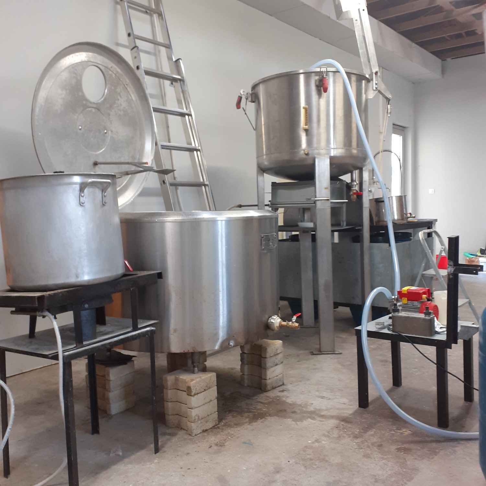

En quelques années, les pionniers du brassage maison ont su donner une âme à la bière.
L'eau, le malt, le houblon, sont devenus source d'inspiration (et d'expérimentations) de brasseurs passionnés. Saveurs, arômes et robes se déclinent à l'infini.
Les bières de terroir sont nées. Les nôtres sont maritimes. Nous habitons sur le littoral languedocien, près de l'île de Maguelone d'où un puissant évêché a rayonné pendant 1000 ans.
